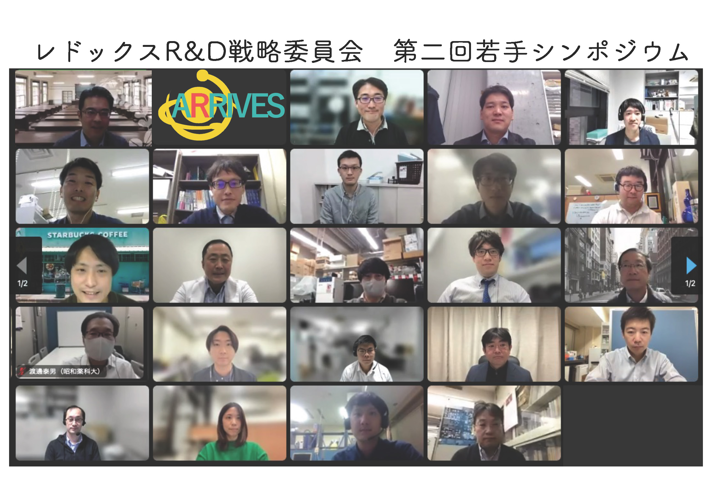

第２回 若手シンポジウム
概要
第2回 若手シンポジウム
日時： 令和4年11月7日（月）13時00分～17時10分
場所： オンライン
世話人： 高田 剛 (東北大学)
西山 和宏 (九州大学)
安田 柊 (北里大学)
受賞者
＜一般の部＞
最優秀賞
下田 翔 （九州大院・薬）
「超硫黄分子生成酵素CARS2の心筋虚血耐性における役割」
優秀賞
金子 尚志（東北大院・薬）
「超硫黄分子種によるラジカル消去作用と脂質過酸化抑制能」
＜特別枠の部＞
最優秀賞
秋山 雅博（慶應大・薬）
「腸内細菌が産生する超硫黄分子の役割について」
優秀賞
細見 晃司（医薬健栄研）
「腸内細菌Blautiaによる代謝促進を介した肥満・糖尿病の抑制効果」
敢闘賞（2名同点）
平田 祐介（東北大院・薬）
「フェロトーシス実行における機械刺激受容体Piezo1/TRPチャネルの機能的役割の解析」
敢闘賞（2名同点）
松岡 正城（北里大学・薬）
「リポキシトーシス脂質酸化実行因子Lipo-1の機能解析」

プログラム
開会の挨拶 13:00～
一般枠 13:10~14:10
（座長：西山）
1. Xiaokang Tang（総研大・生命・生理専攻、生理研・心循環研究室）
「Oxidative glutathione rescues Drp1 depolysulfidation-mediated mitochondrial hyperfission and cardiac vulnerability by electrophilic glutathionylation at Cys624」
2. 下田 翔（九州大院・薬・生理学分野、自然科学研究機構生理学研究所・心循環シグナル研究部門）
「超硫黄分子生成酵素CARS2の心筋虚血耐性における役割」
3. 伊藤 銀河（岩手大・理工・細胞生化学）
「ミトコンドリアにおけるジカルボニル代謝酵素の同定」
4. 金子 尚志(東北大院・薬・代謝制御薬学）
「超硫黄分子種によるラジカル消去作用と脂質過酸化抑制能」
休憩 14:10~14:30
特別枠 14:30~16:00
（座長：髙田、安田）
1. 秋山 雅博（慶應大・薬・創薬研究センター）
「腸内細菌が産生する超硫黄分子の役割について」
2. 細見 晃司（医薬健栄研・ワクチンマテリアルPJ＆腸内環境システムPJ）
「腸内細菌Blautiaによる代謝促進を介した肥満・糖尿病の抑制効果」
3. 荒木 笙馬（昭和薬科大学 薬学部 薬理学研究室）
「S-ニトロソL-システインはシスタチオニン-リアーゼの自殺基質として働く」
4. 平田 祐介（東北大・院薬・衛生化学）
「フェロトーシス実行における機械刺激受容体Piezo1/TRPチャネルの機能的役割の解析」
5. 松岡 正城（北里大学・薬・衛生化学研究室）
「リポキシトーシス脂質酸化実行因子Lipo-1の機能解析」
投票時間 16:00~16:20
休憩・審査結果集計 16:20~16:40
授賞式 16:40~17:00
閉会の挨拶17:00～17:10
参加案内（事前登録フォーム）はこちら
募集要項はこちら
要旨テンプレートはこちら